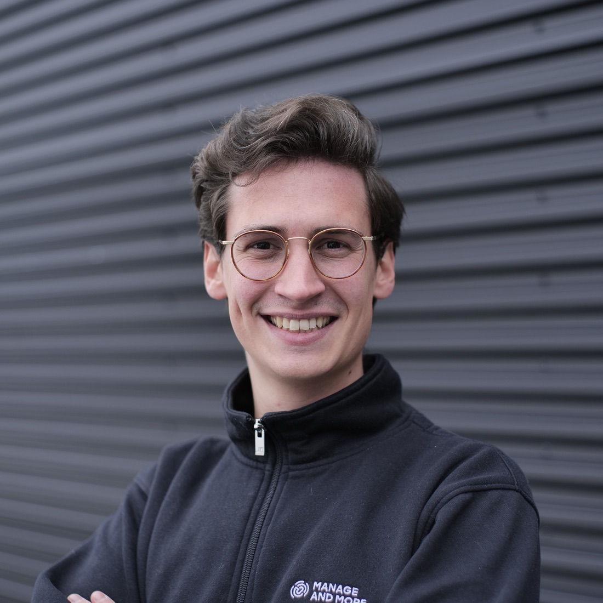
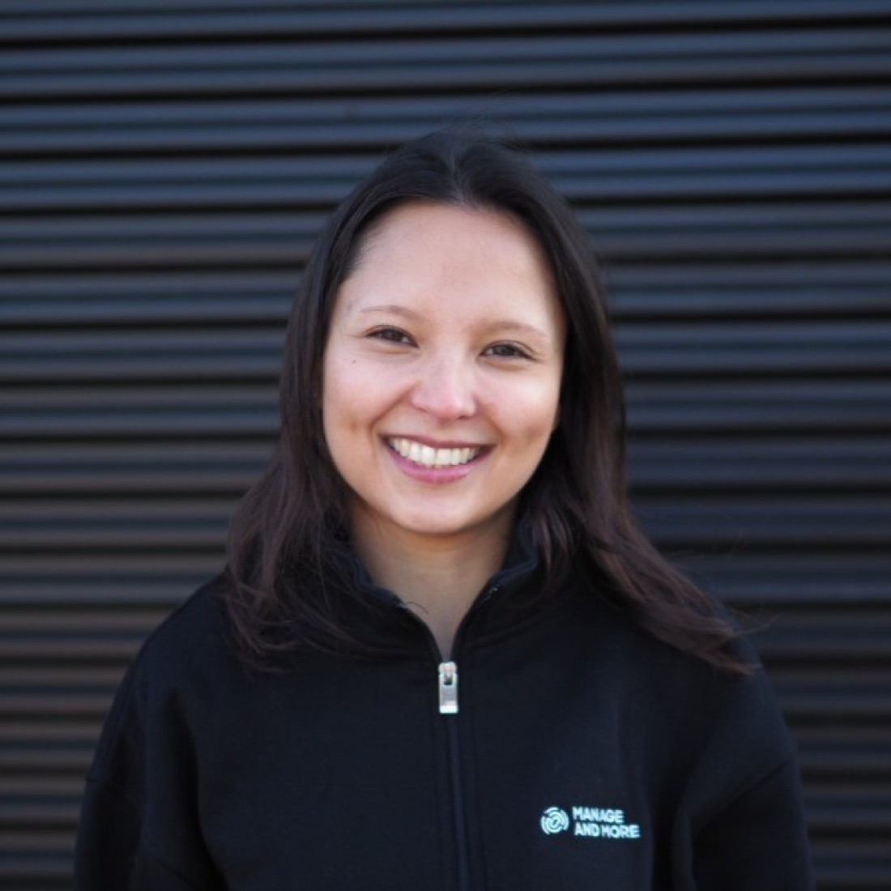

Mathematics & Management
David Dietz
David bringt das analytische Handwerk und ein tiefes Verständnis dafür mit, was Kunden brauchen.
Nuno Labs ist eine Ausgründung der TU München. Im Team arbeiten Menschen mit Stationen an der TU München, in Cambridge und in Stanford.

David bringt das analytische Handwerk und ein tiefes Verständnis dafür mit, was Kunden brauchen.

Benjamin hat bei Cruise Hardware und KI für autonomes Fahren entwickelt. Bei Nuno Labs verantwortet er Sensor-Hub und Modell.

Naomi hat bereits ein Software-Startup gegründet. Bei Nuno Labs kümmert sie sich um die geschäftliche Seite.